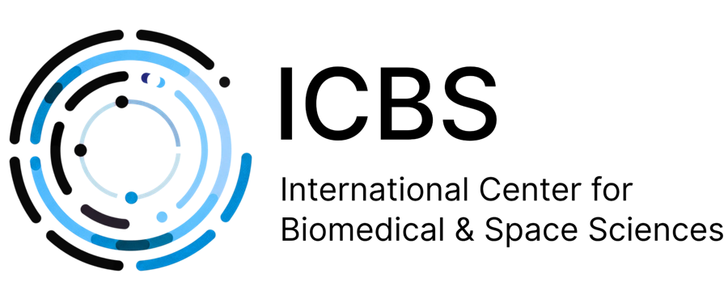

Energy
Every sol starts with energy cells.
The Sun fills the panels. You decide where each cell goes. Whatever is left goes to the battery, which has a limit.

A 3D simulator for all ages. Wake up at a base on Mars, walk on the Moon, float through a copy of the Space Station and complete real missions, each with its own patch. All with NASA data.
Free, in the browser, no sign-up. Keyboard and mouse on a computer, touch on a phone.
Turning on the radiation shield takes power from the greenhouse. Fetching ice drains the battery. Asking Earth for help costs time. That is how NASA mission planners think every day, and that is how the game works.
Try it
A solar storm is on its way. You have 6 energy cells to split.
Energy
The Sun fills the panels. You decide where each cell goes. Whatever is left goes to the battery, which has a limit.
Air and water
With 3 cells, life support stays stable. Fewer than that, and the air runs out.
Space farming
Six real crops already tested in space: lettuce, radish, tomato, chile pepper, potato and wheat. Harvest at the right time, and the plants give back oxygen too.
Radiation
Each mission sol matches a real day recorded by DONKI, NASA’s space weather database. If the real Sun launched a fast ejection that day, your base is in danger.
Communication delay
—min
That is how long a message takes today to get from Mars to Earth. From the Moon, just 1.3 seconds. During an air leak, every minute of waiting costs oxygen.
Real science
Every task ends with a real fact and its source: the MOXIE that made oxygen on Mars, the rover that stopped in a dust storm, the plants grown in Apollo soil.
How it works
Sleep in your bunk, shower, prepare food, train on the treadmill, run the oxygen generator, grow crops, analyze samples in the lab and suit up for a walk outside.
At the energy console, life support, greenhouse, water shield and science compete for the same cells. Air, food and battery change in real time.
Every mission has a call, a briefing and a checklist. A marker and a minimap show where to go. At the end, you earn the mission patch.
Tasks end with a real fact and its source, so you can check it. At the end, a report shows what the mission taught.
Three places, three ways to survive. The numbers below are the ones the game uses.
South Pole · Shackleton Crater
Jezero Crater
A station 420 km up, modeled on the ISS
Mars has a thin atmosphere that blocks part of the radiation. The Moon has none. That is why the daily dose on the Moon is about double.
Real missions
Just like at NASA, every mission gets an emblem. All of them recreate missions or routines that really happened, and you only earn the patch by completing the whole checklist.
Who is behind it
The LIASTRA Institute is the organization behind the project. Motto: Per Cognitionem ad Innovationem, through knowledge to innovation.
LIASTRA’s Aerospace Innovation Center owns the game’s bases: AIC Base Jezero on Mars and AIC Base Shackleton on the Moon.

The ICBS, International Center for Biomedical & Space Sciences, is LIASTRA’s research center. It runs the labs where you analyze samples and run experiments.
NASA data
Each bar is a day. Its height shows the fastest coronal mass ejection DONKI recorded that day. In the game, yellow and red days raise the chance of a particle storm at your base.
Coronal mass ejections from the last 30 days, via NASA’s public API. If the connection fails, the game uses a real archive downloaded on 11/14/2026 and says so on screen.
kauai.ccmc.gsfc.nasa.gov/DONKIThe daily dose on Mars (0.67 mSv) comes from the Curiosity rover’s radiation detector. The May 2024 storm it measured inspires the solar storm card.
Hassler et al., Science 2014The daily dose on the Moon (1.37 mSv) is the first measurement made on the lunar surface itself, by the Chang’e 4 lander.
Zhang et al., Science Advances 2020Facts about plants, regolith and astronaut health come from research like that gathered in NASA’s Open Science Data Repository.
osdr.nasa.govThe Mars delay is calculated in your browser with orbital elements published by JPL. It changes every day.
JPL · approximate positionsTo fit into a few minutes, missions are sped up. The 50 mSv limit is a game training limit; NASA’s real career limit is 600 mSv. Storm doses and crop growth times are teaching estimates.
For schools and families
Cadet is for beginners: slower consumption and 3 sols. Commander has 4 sols. Flight Director has 6 sols and is the toughest challenge. Every level works for any age.
Sol, radiation, millisievert, regolith, CME. Tap any underlined term and a short explanation appears.
At the end, the game shows a chart of the resources, the decisions and what the mission taught. One button copies it all to paste on the board or in the class chat.
No. The game runs entirely in the browser. Progress (stars and patches) is stored only on your device.
Yes. Space weather comes from NASA’s DONKI API. When the page can connect, the data is live; when it can’t, we use a real archive downloaded on 11/14/2026, and the screen says which one is in use. Daily radiation doses come from published measurements. Some game rules are simplified to fit a short session, and we explain which in the data section.
Kids learn best when they can keep track of everything at once. Energy, air and water, and food already create hard choices. Radiation, science and suit oxygen appear as gauges alongside.
Yes. On a phone, drag the left side of the screen to move and the right side to look; a big button lets you interact. On a computer, use W A S D, the mouse and the E key. It needs a browser with WebGL, which almost every current device has.
The LIASTRA team, for the NASA Space Apps Challenge 2026. It is an independent educational project and not an official NASA product.